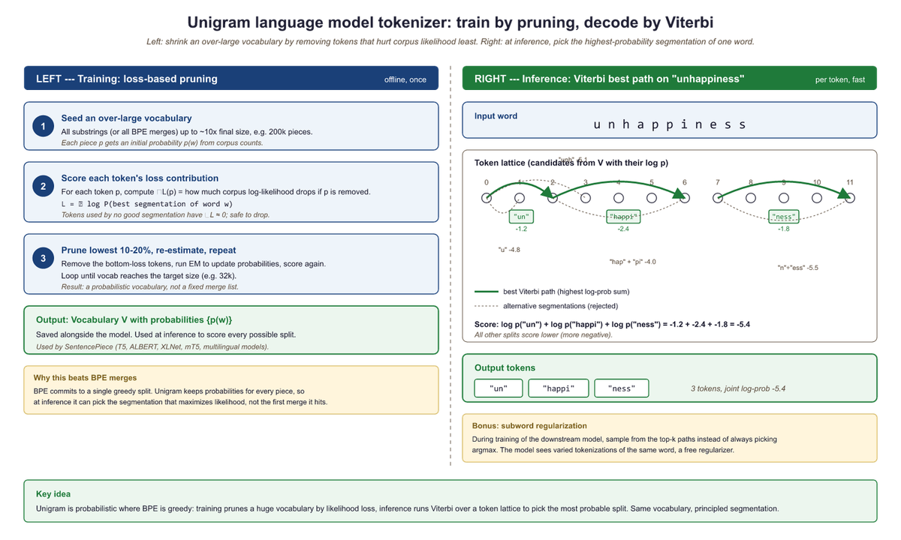
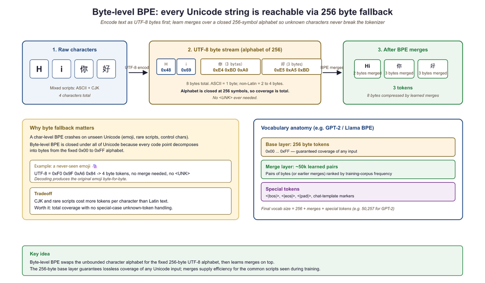

I merged byte pairs until "un" and "believable" became one token. Then I tried "un" and "fortunate." We don't talk about that.
Token, Compulsively Merging AI Agent
BPE and WordPiece are bottom-up: they start with characters and build larger tokens by merging. Unigram is top-down: it starts with a large set of candidates and prunes down. Think of it this way: BPE is like building words from letter tiles by discovering common pairs. Unigram is like starting with a full dictionary and removing the least useful entries. As we discussed in Section 1.5, the vocabulary size tradeoff governs this entire design space.
A practical advantage of Unigram is that it produces multiple possible segmentations with associated probabilities, which can be used for data augmentation during training (by sampling different segmentations of the same word). This technique, known as subword regularization (Kudo, 2018), has been shown to improve model robustness.
Overview of Subword Methods
BPE's greedy merge rule (pick the most frequent adjacent pair, merge it, repeat) is doing something subtle: it performs approximate maximum-likelihood compression of the corpus under a unigram model over the evolving vocabulary. Shannon-style coding theory says the optimal code length for a symbol is -log p, and the greedy merge minimizes expected code length step-by-step. The reason BPE wins over character-level or word-level is Zipf's law: word frequencies decay as a power law, so a fixed vocabulary cannot cover the tail without UNK tokens, but characters force the model to do too much work learning that "ing" is one unit. Subword tokenization is the Pareto front of these two extremes.
Lego figured out something subtle: instead of selling one giant pre-built house, sell a finite set of small bricks that snap together into any house. Subword tokenizers do the same with language. Common words like "the" stay as single bricks, rare words like "antidisestablishmentarianism" decompose into reusable bricks, and the resulting vocabulary is rich enough to spell anything while small enough to fit in memory.
You are about to learn the three algorithms that decide how every modern LLM reads text. If you have ever wondered why GPT tokenizes "ChatGPT" differently from "chatgpt," or why a simple Korean sentence consumes three times more tokens than its English translation, the answers lie in these algorithms. All subword tokenization algorithms solve the same problem: given a training corpus, learn a vocabulary of subword units that can represent any text efficiently. They differ in how they build the vocabulary and how they segment new text at inference time. The three dominant families are:
- Byte Pair Encoding (BPE): a bottom-up, merge-based approach used by GPT-2, GPT-3, GPT-4, Llama, and most modern LLMs (Chapter 7).
- WordPiece: a variant of BPE that uses a likelihood-based merge criterion, used by pretraining data and its derivatives.
- Unigram Language Model: a top-down, pruning-based approach that assigns probabilities to all subword candidates and uses the Viterbi algorithm for segmentation, used by T5, ALBERT, and XLNet.
In addition, we will cover byte-level BPE (deep treatment in the Byte-level BPE section below: it eliminates the need for character-level preprocessing) and tokenizer-free models (which bypass discrete tokenization entirely).
Before the algorithms diverge, it helps to see the move they all start from. Figure 1.6.1 animates the bottom-up engine that drives BPE: split words into characters, count every adjacent pair across the corpus, merge the single most frequent pair into a new token, and repeat. Each pass adds exactly one entry to the merge table, and after a few hundred passes the common suffixes and whole words emerge on their own.
Byte Pair Encoding (BPE)
Both BPE and WordPiece build their vocabularies from the bottom up, starting with individual characters and merging upward. The Unigram model takes the opposite direction entirely. Proposed by Kudo (2018) and implemented in the SentencePiece (a Google-developed tokenization library), it starts from the top down. Instead of starting small and merging upward, it starts with a large initial vocabulary of candidate subwords and iteratively prunes the least useful ones.
Training Procedure
The Unigram model assigns a probability to each possible segmentation of a word. Given a word $x$, the probability of a particular segmentation $S = (t_{1}, t_{2}, ..., t_{m})$ is:
The overall corpus loss is the negative log-likelihood over all words:
The training procedure alternates between finding the best segmentation of the corpus and removing the least useful tokens from the vocabulary:
- Begin with a large candidate vocabulary (for example, all substrings up to a certain length that appear in the training data).
- Assign a probability to each subword based on its frequency in the corpus, forming a unigram language model: $P(token) = freq(token) / total_{freq}$.
- For each word in the training data, find the most probable segmentation using the Viterbi algorithm (dynamic programming over all possible tokenizations).
- Compute the overall log-likelihood of the corpus under the current model.
- For each subword in the vocabulary, measure how much worse the model's predictions would become if that subword were removed.
- Remove the subwords whose removal causes the smallest decrease (they are the least useful).
- Repeat from step 2 until the vocabulary reaches the target size.
A 10-character word has 512 possible segmentations; enumerating them all is impractical, so we use dynamic programming. The Viterbi algorithm finds the optimal path through a sequence of possible states. Consider tokenizing "cats" with a small unigram vocabulary, processing left to right to find the best segmentation at each position.
Suppose our vocabulary has these subwords and log-probabilities:
| Subword | log P |
|---|---|
| c | -2.5 |
| a | -2.3 |
| t | -2.4 |
| s | -2.6 |
| ca | -1.8 |
| cat | -1.2 |
| cats | -3.0 |
| at | -1.9 |
| ats | -2.1 |
| ts | -2.0 |
Step 1: Initialize. Create a score array for positions 0 through 4 (one past each character). Set score[0] = 0 (the start has no cost).
Step 2: Fill position 1 (after "c"). The only subword ending here is "c" (log P = -2.5). Best path to position 1: ["c"], score = -2.5.
Step 3: Fill position 2 (after "ca"). Two candidates reach here:
- "a" from position 1: score[1] + log P("a") = -2.5 + (-2.3) = -4.8
- "ca" from position 0: score[0] + log P("ca") = 0 + (-1.8) = -1.8 (winner)
Best path to position 2: ["ca"], score = -1.8.
Step 4: Fill position 3 (after "cat"). Three candidates:
- "t" from position 2: score[2] + log P("t") = -1.8 + (-2.4) = -4.2
- "at" from position 1: score[1] + log P("at") = -2.5 + (-1.9) = -4.4
- "cat" from position 0: score[0] + log P("cat") = 0 + (-1.2) = -1.2 (winner)
Best path to position 3: ["cat"], score = -1.2.
Step 5: Fill position 4 (after "cats"). Four candidates:
- "s" from position 3: score[3] + log P("s") = -1.2 + (-2.6) = -3.8 (winner)
- "ts" from position 2: score[2] + log P("ts") = -1.8 + (-2.0) = -3.8 (tie)
- "ats" from position 1: score[1] + log P("ats") = -2.5 + (-2.1) = -4.6
- "cats" from position 0: score[0] + log P("cats") = 0 + (-3.0) = -3.0 (actually best!)
Best path to position 4: ["cats"], score = -3.0. But if "cats" were not in the vocabulary,
the best segmentation would be ["cat", "s"] with score -3.8.
Why dynamic programming? A 20-character word has over 500,000 possible segmentations. Viterbi avoids enumerating them by building optimal partial solutions left to right, keeping only the single best path at each position. This reduces exponential time to O(n × m), where n is the word length and m is the maximum subword length.

Prerequisites
You should have read Section 1.5: Why Tokenization Matters, which covers the vocabulary-coverage tradeoff and the problems with word-level and character-level tokenization that motivate subword methods. Familiarity with basic probability and information theory concepts (frequency, log-likelihood) helps when understanding the Unigram model, though it is not strictly required.
Comparison of the Three Methods
| Property | BPE | WordPiece | Unigram |
|---|---|---|---|
| Build direction | Bottom-up (merge) | Bottom-up (merge) | Top-down (prune) |
| Merge criterion | Most frequent pair | Max likelihood gain | Min likelihood loss on removal |
| Inference method | Replay merges | Greedy MaxMatch | Viterbi (dynamic programming) |
| Segmentation | Deterministic | Deterministic | Probabilistic (can sample) |
| Notable users | GPT-2/3/4, Llama, Mistral | BERT, DistilBERT | T5, ALBERT, XLNet |
| Library | tiktoken, HF tokenizers | HF tokenizers | SentencePiece |
You need to know all three algorithms because you will encounter all three in production: GPT models use BPE, BERT uses WordPiece, and T5 uses Unigram. Understanding the differences helps you debug tokenization issues specific to each model.
WordPiece in Practice: Greedy MaxMatch Decoding
WordPiece (Schuster & Nakajima, 2012; Wu et al., 2016) differs from BPE in the training criterion that picks which adjacent symbols to merge. BPE merges the most frequent bigram; WordPiece merges the pair $(a,b)$ that maximizes the unigram-language-model gain
$$\text{score}(a, b) \;=\; \log \frac{P(ab)}{P(a)\,P(b)} \;\approx\; \log\!\Big(\tfrac{\text{count}(ab)}{\text{count}(a)\,\text{count}(b)} \cdot N\Big),$$
where $N$ is the total count of tokens in the corpus. The merge that maximizes this pointwise-mutual-information-like score is the one whose components are much more likely together than apart; this lets WordPiece prefer linguistically motivated splits over purely frequency-driven ones.
At inference time WordPiece does not replay a merge table the way BPE does. Instead it runs greedy longest-match (MaxMatch): for each whitespace-separated word, it tries to peel off the longest prefix that exists in the vocabulary, marks the remainder with the continuation prefix ##, and repeats on what is left. The diagram below traces the algorithm on the word unaffable.
## to mark it as a continuation, and the search restarts on the suffix. The procedure is deterministic and runs in O(L^2) time per word, where L is the word length.The Hugging Face tokenizer used by BERT exposes exactly this algorithm:
from transformers import AutoTokenizer
tok = AutoTokenizer.from_pretrained("bert-base-uncased")
print(tok.tokenize("unaffable tokenization"))
# ['una', '##ffa', '##ble', 'token', '##ization']
# Manual MaxMatch on a single word, against the same vocabulary
def maxmatch(word, vocab):
pieces, i = [], 0
while i < len(word):
j = len(word)
while j > i and word[i:j] not in vocab and not (i > 0 and ("##" + word[i:j]) in vocab):
j -= 1
if j == i: # nothing matched -> unknown token
return ["[UNK]"]
piece = word[i:j] if i == 0 else "##" + word[i:j]
pieces.append(piece); i = j
return pieces
print(maxmatch("unaffable", set(tok.vocab)))
# ['una', '##ffa', '##ble']
Code Fragment 1.6.1c: BERT's WordPiece tokenizer in action. The first call uses the production tokenizer; the second call reproduces the same output with a 10-line MaxMatch loop against the same vocabulary. The continuation prefix ## is what allows the model to recover word boundaries during embedding lookup and during de-tokenization.
['una', '##ffa', '##ble', 'token', '##ization'] ['una', '##ffa', '##ble']
After learning three different tokenization algorithms, readers sometimes conclude that the choice of BPE vs. WordPiece vs. Unigram is the most critical decision for model performance. In practice, the training corpus used to build the tokenizer matters far more than the algorithm choice. A BPE tokenizer trained on a balanced multilingual corpus will handle Japanese better than a Unigram tokenizer trained on English-only text. The algorithm affects edge cases (Unigram offers probabilistic segmentation, BPE is deterministic), but for most applications, the vocabulary size and training data distribution are the dominant factors. Do not over-optimize the algorithm choice while neglecting the data that feeds it.
Train and use a SentencePiece tokenizer (the library behind T5, ALBERT, and Llama).
Show code
# pip install sentencepiece
import sentencepiece as spm
import tempfile, os
# Write sample training data to a temp file
corpus = "The cat sat on the mat.\nThe dog chased the cat.\nLanguage models learn from text."
tmp = tempfile.NamedTemporaryFile(mode="w", suffix=".txt", delete=False)
tmp.write(corpus); tmp.close()
# Train a small Unigram tokenizer
spm.SentencePieceTrainer.train(
input=tmp.name, model_prefix="tiny_sp",
vocab_size=50, model_type="unigram"
)
# Load and tokenize
sp = spm.SentencePieceProcessor(model_file="tiny_sp.model")
tokens = sp.encode("The cat chased the dog.", out_type=str)
print("Tokens:", tokens)
ids = sp.encode("The cat chased the dog.")
print("IDs:", ids)
print("Decoded:", sp.decode(ids))
os.unlink(tmp.name)Use the fast Rust-backed tokenizers library to train a BPE tokenizer from scratch.
Show code
# pip install tokenizers
from tokenizers import Tokenizer
from tokenizers.models import BPE
from tokenizers.trainers import BpeTrainer
from tokenizers.pre_tokenizers import Whitespace
tokenizer = Tokenizer(BPE(unk_token="[UNK]"))
tokenizer.pre_tokenizer = Whitespace()
trainer = BpeTrainer(vocab_size=100, special_tokens=["[UNK]", "[PAD]"])
# Train on raw text (pass list of file paths for large corpora)
tokenizer.train_from_iterator(
["The cat sat on the mat", "The dog chased the cat"],
trainer=trainer,
)
output = tokenizer.encode("The cat chased the dog")
print("Tokens:", output.tokens)
print("IDs:", output.ids)Byte-Level BPE
Standard BPE operates on Unicode characters, which means the initial vocabulary must include all characters that appear in the training data. For multilingual models, this can mean thousands of distinct characters from Chinese, Japanese, Korean, Arabic, Devanagari, and other scripts before any merges even begin.
Byte-level BPE, introduced by the GPT-2 team (Radford et al., 2019), solves this by operating on raw bytes instead of Unicode characters. Since there are only 256 possible byte values, the initial vocabulary is always exactly 256, regardless of what languages or scripts appear in the data. Multi-byte Unicode characters (such as Chinese characters, which are typically 3 bytes in UTF-8) are initially represented as sequences of byte tokens, and BPE merges then learn to combine them into higher-level units.
In UTF-8 encoding, ASCII characters (English letters, digits, common punctuation) are each 1 byte. Characters from most European languages are 2 bytes. CJK characters are 3 bytes, and some emoji are 4 bytes. Byte-level BPE starts with these raw bytes and lets the merge process discover character and word boundaries automatically. GPT-2, GPT-3, GPT-4, Llama-2, and Llama-3 all use byte-level BPE.

Tokenizer-Free Models
Byte-level BPE still requires a trained merge table and a fixed vocabulary. Could we go further and skip the vocabulary entirely? What if we eliminated the tokenizer altogether and let the model operate directly on raw bytes? This idea has gained traction with models like ByT5 (Xue et al., 2022) and MegaByte (Yu et al., 2023), which process byte sequences without any subword segmentation step.
ByT5: Bytes Are All You Need
ByT5 modifies the T5 architecture to accept raw UTF-8 bytes as input. It uses a vocabulary of only 259 tokens (256 byte values plus 3 special tokens). The obvious downside is that sequences become very long: a 100-word English sentence might be 400 to 600 bytes, compared to 120 to 150 subword tokens. ByT5 compensates with a deeper encoder (relative to the decoder) and achieves competitive performance on many NLP benchmarks while being more robust to noise, spelling errors, and cross-lingual transfer.
MegaByte: Hierarchical Byte Models
MegaByte addresses the long-sequence problem by introducing a hierarchical architecture. It divides the byte sequence into fixed-size patches (for example, P = 8 bytes each) and processes these patches with a large "global" transformer. Within each patch, a smaller "local" transformer predicts individual bytes. The global transformer processes N/P patches instead of N bytes, reducing the quadratic attention cost from O(N²) to O((N/P)² + P²). This two-level approach makes byte-level modeling practical for longer documents.
More recently, Meta's Byte Latent Transformer (BLT, 2024) dynamically allocates compute to complex byte sequences, achieving competitive performance with subword models while maintaining the benefits of byte-level input. This line of research suggests that the gap between tokenizer-free and subword-based models is narrowing.
Tradeoffs of Tokenizer-Free Models
| Advantage | Disadvantage |
|---|---|
| No tokenizer training required | Much longer sequences (3x to 5x) |
| Robust to typos and noise | Higher computational cost per text |
| Inherently multilingual and script-agnostic | Harder to learn long-range dependencies |
| No out-of-vocabulary tokens | Less interpretable intermediate representations |
| Uniform treatment of all inputs | Not yet competitive at the largest scales |
The progression from character-level to subword to byte-level models reveals a fundamental tension in representation theory. Kolmogorov complexity tells us that the shortest description of a string depends on the description language itself. BPE, WordPiece, and Unigram each define a different "description language" for text, and their vocabularies are learned compressions of the training corpus. Tokenizer-free byte models push this to its logical extreme: rather than pre-computing a compression scheme, they ask the neural network itself to discover the optimal groupings. This parallels the broader trend in deep learning away from handcrafted features toward learned representations. The open question is whether the computational cost of rediscovering structure that a tokenizer provides for free can ever be justified, or whether some level of inductive bias in the input encoding is always worth the trade.
As of 2025, all widely deployed production LLMs (GPT-4, Claude, Llama, Gemini, Mistral) use subword tokenization. Tokenizer-free models are an active research direction with promising results on specific benchmarks, but they have not yet been proven at the scale and breadth of tasks required for general-purpose deployment. Keep an eye on this space, but do not assume that tokenizers are going away anytime soon.
Who: A machine learning team at a developer tools startup training a code-generation model.
Situation: The team was training a BPE tokenizer for a code-focused LLM. They initially used a vocabulary of 32K tokens (following the GPT-2 convention) trained on a mix of Python, JavaScript, Java, and Rust source code.
Problem: During evaluation, the model frequently produced syntactically broken code. Indentation errors were especially common in Python, and multi-character operators like !== and <<= in other languages were being split in inconsistent ways.
Dilemma: They could increase vocabulary size to 64K or 100K (capturing more code patterns as single tokens, but increasing embedding table size), add pre-tokenization rules to protect whitespace and operators, or switch to byte-level BPE to handle all characters uniformly.
Decision: They adopted byte-level BPE (following the GPT-4 approach) with a 100K vocabulary and added pre-tokenization rules that treated indentation blocks and common multi-character operators as atomic units before BPE merges.
How: Using the Hugging Face tokenizers library, they trained a byte-level BPE tokenizer with custom pre-tokenization regex patterns that preserved indentation whitespace and operator sequences. They validated by measuring "round-trip accuracy" on 10,000 code files.
Result: Syntax error rates in generated code dropped by 34%. Python indentation errors fell by 61%. The larger vocabulary increased model size by only 2% (the embedding table is small relative to the full model), while reducing average sequence length by 18%, saving inference compute.
Lesson: Vocabulary size and pre-tokenization rules are not afterthoughts. For domain-specific models, investing in tokenizer design pays dividends that no amount of fine-tuning can replicate.
Now that you understand how these algorithms work internally, Section 2.3 shows how they behave in practice: special tokens, chat templates, multilingual fertility, and cost estimation.
Always use the exact tokenizer that was paired with your pretrained model. Mixing tokenizers (for example, using a GPT-2 tokenizer with a LLaMA model) produces garbage because the token-to-ID mapping will not match the model's learned embeddings.
Tokenizer training is becoming more principled. Recent work provides theoretical frameworks for choosing vocabulary sizes rather than relying on heuristics. Byte-level BPE with UTF-8 encoding has become the dominant approach (used by Llama-3, GPT-4, Claude). Research on tokenization-free approaches continues: MegaByte (Meta, 2023) patches bytes into groups processed by a local model. The tradeoff between tokenizer complexity and model size remains an open question.
- BPE builds a vocabulary bottom-up by iteratively merging the most frequent adjacent pair of tokens. It is the most widely used tokenizer in modern LLMs.
- WordPiece is similar to BPE but merges pairs that maximize training data likelihood rather than raw frequency. It is the tokenizer behind BERT.
- Unigram works top-down by pruning a large initial vocabulary. It uses the Viterbi algorithm for segmentation and can produce multiple probabilistic segmentations, enabling subword regularization.
- Byte-level BPE operates on raw UTF-8 bytes (base vocabulary of 256), eliminating the need for character-level preprocessing and providing natural multilingual support.
- Tokenizer-free models (ByT5, MegaByte) bypass subword tokenization entirely, gaining robustness and universality at the cost of longer sequences and higher compute.
- All three mainstream methods (BPE, WordPiece, Unigram) produce similar practical results; the choice is often driven by ecosystem and codebase rather than fundamental quality differences.
Show Answer
Show Answer
Show Answer
Show Answer
Show Answer
Show Answer
Exercises
(a) State the merge rule that BPE uses, in one sentence. (b) State how WordPiece's likelihood-based merge differs from BPE's frequency-based merge. (c) State how Unigram's pruning differs from both, and which of the three SentencePiece defaults to.
Answer Sketch
(a) BPE: at each step, merge the most-frequent adjacent symbol pair across the corpus into a new token. (b) WordPiece: pick the merge that maximizes the increase in training-corpus likelihood under the resulting vocabulary, which favors merges of pairs that co-occur more than expected by chance, not just frequent pairs. (c) Unigram: start with a large set of candidate tokens and iteratively prune those whose removal increases the corpus likelihood least; the result is a vocabulary chosen by what to keep rather than what to merge. SentencePiece supports both BPE and Unigram as defaults; modern multilingual models (T5, mT5, ALBERT) tend to choose Unigram for its better handling of rare and morphologically rich languages.
You train a BPE tokenizer with target vocabulary 32K on a corpus that's 90% English code and 10% Chinese natural language. Predict: (a) how many of the 32K tokens end up Chinese-related; (b) the resulting fertility (tokens/character) on Chinese text; (c) the most defensible mitigation if Chinese performance matters.
Answer Sketch
(a) Token allocation roughly tracks corpus proportion, so ~3,000-5,000 tokens end up Chinese-related (slightly more than 10% because Chinese characters are individually rare units, so each gets its own token rather than merging into common pieces). (b) Fertility on Chinese will be poor: roughly 1.5-2.5 tokens per character, much worse than the ~0.6 tokens per character a Chinese-tuned tokenizer would achieve. (c) The defensible mitigation: rebalance the training mix (upsample Chinese to 30-40% during tokenizer training, even if it's still 10% in the model corpus). Tokenizer training is much cheaper than model training, and the resulting vocabulary serves the model for its entire life.
Sketch a 12-line BPE training loop that takes a list of word frequencies and produces N merge rules. Show the output for the toy corpus {"low": 5, "lower": 2, "newest": 6, "widest": 3} after 3 merges.
Answer Sketch
from collections import Counter
def get_pairs(words): return Counter((w[i], w[i+1]) for w, c in words.items() for i in range(len(w)-1) for _ in range(c))
def merge(words, pair):
new = {}; bg = "".join(pair)
for w, c in words.items():
nw = []; i = 0
while i < len(w):
if i < len(w)-1 and (w[i], w[i+1]) == pair: nw.append(bg); i += 2
else: nw.append(w[i]); i += 1
new[tuple(nw)] = c
return new
words = {tuple(w): c for w, c in {"low":5,"lower":2,"newest":6,"widest":3}.items()}
for _ in range(3): pair = get_pairs(words).most_common(1)[0][0]; words = merge(words, pair); print(pair)Expected first three merges (depending on tie-breaking): ("e", "s"), ("es", "t"), ("l", "o"). The output illustrates how BPE rapidly captures common suffixes and frequent character pairs.
List four downstream failures that come from a poorly chosen subword tokenizer, with one mitigation each.
Answer Sketch
(1) Code identifier fragmentation: function_name_with_underscores tokenizes into 10+ pieces. Mitigation: train tokenizer with significant code corpus or use a coding-specific model. (2) Number tokenization weirdness: "1024" splits as "10" + "24", confusing arithmetic. Mitigation: per-digit tokenization (Llama-3) or tool routing for math. (3) Special token leakage: user input contains a substring that tokenizes to a special control token, causing prompt-injection-like behavior. Mitigation: escape or strip control tokens at the input boundary. (4) Cross-script collisions: a tokenizer trained mostly on English maps Cyrillic lookalikes to weird sequences, causing reliability issues for Russian users. Mitigation: language-detection routing to a multilingual tokenizer. The general lesson: tokenizer choices made once at model-training time create subtle bugs that surface much later in production.
What's Next?
In the next section, Section 1.7: Tokenization in Practice & Multilingual Considerations, we cover practical tokenization considerations, including multilingual challenges and implementation details.